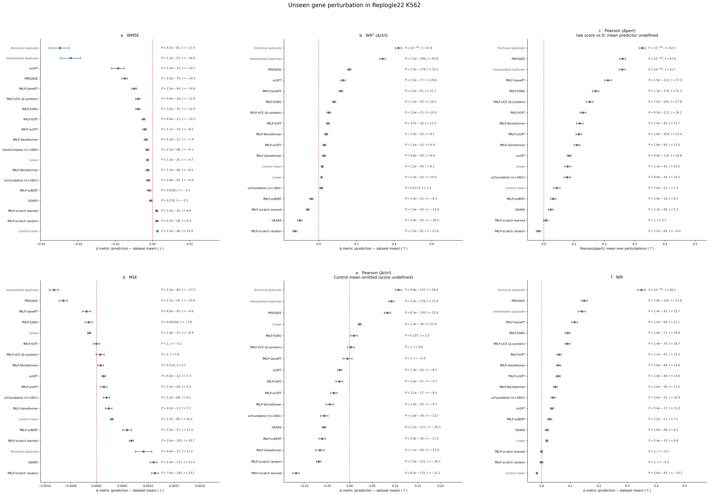

NOTES / OCTOBER 2026
扰动模型的 baseline 及性能报告
Miller 2026 的 18 项指标复现：保留 HepG2 / K562 / Jurkat 原有结果，在 HepG2 / K562 补入 scGPT、三种冻结嵌入 fMLP 与 PRESAGE，并单列 K562 共同队列 WMSE 森林图。
结论
结果口径：下表保留各模型原生覆盖（native）的五折拼接均值，旧列数字不变；扰动数和基因轴不同，不能据此直接排出跨模型名次，也不宣称扩大后的模型排序与论文全部一致。K562 的配对 WMSE 比较见下方共同队列森林图。
评测任务与指标：本复现覆盖未见单基因扰动三个数据集：HepG2（Nadig25）、K562（Replogle22）、Jurkat（Nadig25）；共 18 个指标。原有 Linear、Mean、GEARS、fMLP–Geneformer 与正负对照保持；新增 scGPT、fMLP–scGPT、fMLP–GenePT、fMLP–ESM2、PRESAGE 仅覆盖 HepG2/K562，每模型每数据集均完成 5/5 折，不扩展 Jurkat。
本次更新（2026-10-26）：合入 scGPT 报告（2026-10-25）与其余模型补跑报告（2026-10-26）；PRESAGE 只采用完整五折结果。scLambda 因缺少独立嵌入缓存跳过；CellFlow 因现有运行入口与依赖阻塞跳过，均未训练、无本次结果。
比较边界：不再从不同原生支持集的均值给出模型名次；相对 Mean 的配对结果见下图。

固定队列是 1802 个扰动（fold 与 condition）。GeneCompass (n=1660) 和 scFoundation (n=1801) 的 Mean 用它们自己那批扰动：scFoundation 只比固定队列少了 NBAS。其他行没有改到 1660 或 1801 上重算，所以每一行只和自己的 Mean 比，整张图不是同一批扰动上的名次。GeneCompass 的逐扰动文件只有 WMSE，因此只出现在 a。面板 c：数据集 Mean 的 Pearson(Δpert) 在每个扰动上都是 NaN。Mean 是常数预测，Δpert 没有方差，相关系数没有定义；这与论文 MOESM4 结果表 I14、I28 记为 “-” 一致。c 不减 Mean，也不把 NaN 当成 0，而是画各行自己的 Pearson(Δpert)，对 0 做检验，红线就是 0。面板 e：Control mean 的 Pearson(Δctrl) 全部未定义，MOESM4 的 H13、H27 同样是 “-”，所以 e 去掉这一行；GeneCompass 同样没有该列。其余面板里 Control mean 仍在。五折扰动合并后做 bootstrap 和 t 检验。双精度 p 下溢为 0 时，图上写成 \(P<10^{-300}\)。Technical duplicate、Interpolated duplicate、Control mean 仍用 8370 个基因的旧分数，配到 8369 个基因的 Mean；其余行和 Mean 是 8369 个基因。基因轴没有对齐，不是完全同口径的比较。分数用各次运行现成的逐扰动表，没有重新训练或重新评分。上方各表仍是各模型自己的覆盖，不能用表内均值相减还原图中的差值。逐行统计值与数据来源及绘图协议一并保留。
现有指标及计算方案
Miller et al. 用校准后的指标说明：即便较早期的深度模型，在部分指标上也大多能超过无信息 baseline；更新的模型（如 PRESAGE）更进一步。以 Fig. 2b（K562，WMSE）为例，从矩阵到森林图的处理如下。
- 预测矩阵合并为扰动级向量（每轮按扰动计算，不是逐细胞比）。每个测试扰动把细胞对半：GT 半聚成真值伪批量 \(y\)（GT），模型输出同维伪批量 \(\hat{y}\)（预测）。GEARS 等对抽样 control 取均值后再加扰动效应。Mean 基线则是本折训练扰动伪批量的等权平均 \(\mu_{\mathrm{all}}\)。
- 每个扰动算一次 WMSE。用 GT 半细胞相对「其余非对照扰动」细胞做 t-test（overestim_var），得到 \(t_g\)（\(|t_g|\) 反映该基因相对其他扰动的特异程度）；对 \(|t|\) min–max 后再平方得基因权重 \(w_g\)（权重只来自 GT，避免泄漏）。然后 $$ \mathrm{WMSE}_i=\frac{\sum_g w_g(\hat y_g-y_g)^2}{\sum_g w_g}. $$ 其中 \(\hat y\) 为预测伪批量、\(y\) 为 GT 伪批量、\(g\) 为基因。对 Mean 用同一套 \(y,w\)，把 \(\hat y\) 换成 \(\mu_{\mathrm{all}}\)，得到 \(\mathrm{WMSE}_i^{\mathrm{Mean}}\)。
- Fig. 2b 画的不是绝对 WMSE，而是差值。每个扰动：\(\Delta_i=\mathrm{WMSE}_i(\text{模型})-\mathrm{WMSE}_i(\text{Mean})\)。WMSE 越低越好，所以 \(\Delta<0\)（点在 0 左侧）= 打过 Mean。图注 \(n=2045\) 就是这类成对差值的扰动数。
- 汇总成一行森林图。对所有 \(\Delta_i\) 取均值 \(\mu_\Delta\)；95% CI 用扰动级 bootstrap（文中 10,000 次）；再对「模型 vs Mean」做配对 t 检验（Bonferroni）。一点 + 横线 = 这一行的 \(\mu_\Delta\) 与 CI，不是五折先平均再画。
测评计算示例
数据集：Replogle22 K562 的测试扰动 ACTR3，模型为 GEARS。
1．预测矩阵合并为扰动级向量（本例：ACTR3）。按扰动聚合后，\(y\) 是 GT 真值伪批量，\(\hat y\) 是 GEARS 输出的同维预测伪批量，Mean 基线 \(\mu_{\mathrm{all}}\) 是本折训练扰动伪批量的等权平均。下表列出 ACTR3 对应向量中的基因值，而非逐细胞比较。
| 基因 | \(y\)（GT） | \(\hat y\)（GEARS） | \(\mu_{\mathrm{all}}\)（Mean） |
|---|---|---|---|
| ACTR3 | 0.46863884 | 1.03306040 | 0.99744137 |
| SASS6 | 0.11454315 | 0.31217086 | 0.32649157 |
| TBXA2R | 0.17676552 | 0.08538473 | 0.08957724 |
| RPAIN | 0.60013849 | 0.49888048 | 0.51133575 |
| SZT2 | 0.10860045 | 0.10138429 | 0.08642177 |
| HNRNPL | 0.53350878 | 0.50137216 | 0.53313081 |
2．每个扰动算一次 WMSE（本例手算子集）。
先给每个基因算一个 t 值，衡量它在 ACTR3 里有多「特别」。做法是比较两组细胞在这个基因上的表达：
- ACTR3 组：ACTR3 的 GT 半细胞，共 \(n_1\) 个，这个基因的平均表达记为 \(\bar x_1\)，方差记为 \(s_1^2\)。
- 参照组：数据里其余被敲了别的基因的细胞，共 \(n_2\) 个，平均表达 \(\bar x_2\)，方差 \(s_2^2\)。这里的「非对照扰动」指敲了某个基因的细胞，不包括 control（没敲任何基因、只加了非靶向引导 RNA 的细胞），所以参照组里没有 control。
普通的 Welch t 检验是：
$$ t_g=\frac{\bar x_1-\bar x_2}{\sqrt{\dfrac{s_1^2}{n_1}+\dfrac{s_2^2}{n_2}}}. $$Miller 用的 t-test_overestim_var 只改了一处：分母里把参照组的细胞数 \(n_2\) 也当成 \(n_1\)：
参照组通常有成千上万个细胞，远多于 ACTR3 这一组。按真实的 \(n_2\) 算，\(s_2^2/n_2\) 几乎为零，分母偏小，t 值就偏大。这里假装参照组也只有 \(n_1\) 个细胞，分母变大，t 值变小，也就是把方差估高了，所以叫「方差高估」。目的是细胞少的扰动不会因为偶然波动被判成差异很大。
\(|t_g|\) 越大，说明这个基因在 ACTR3 里相对其他扰动越特别，上调还是下调都算。
再把 \(|t_g|\) 换算成 0 到 1 的权重。先拿 ACTR3 在全部 8,370 个基因上的 \(|t|\) 排一遍：最小值记为 \(a=0.0000334845463\)，最大值记为 \(b=5.621879577637\)。每个基因的 \(|t_g|\) 都按这两个数缩放到 0 到 1。下面表格只摘了 6 个基因，但 \(a\) 和 \(b\) 仍然取全部 8,370 个基因里的最小和最大值，不取这 6 行里的。否则同一个基因的权重会因为表里摘了哪几行而变化：
$$ u_g=\frac{|t_g|-a}{b-a},\qquad w_g=u_g^2. $$归一化值越大，平方后的权重越大。平方会进一步压低较小归一化值的相对权重，更强调强效应、即这里 \(|t_g|\) 较大的基因，并非放大所有基因的权重。
例如 SASS6：\(u_g=(3.51611304-a)/(b-a)\approx0.62543149\)，\(w_g\approx0.39116454\)。
最后计算加权误差。GEARS 与 Mean 共用同一套真值 \(y\) 和权重 \(w_g\)。先将 GEARS 的逐基因预测误差平方后乘以权重，再求和并除以权重之和；对 Mean 只把预测伪批量 \(\hat y\) 换成训练扰动等权平均 \(\mu_{\mathrm{all}}\)。下表最后两列就是两者分子中的逐基因项：\(A_g=w_g(\hat y_g-y_g)^2\)，\(B_g=w_g(\mu_{\mathrm{all},g}-y_g)^2\)。
| 基因 | \(|t_g|\) | \(u_g\) | \(w_g\) | \(A_g\)（GEARS） | \(B_g\)（Mean） |
|---|---|---|---|---|---|
| ACTR3 | 5.62187958 | 1.00000000 | 1.00000000 | 0.31857170 | 0.27963212 |
| SASS6 | 3.51611304 | 0.62543149 | 0.39116454 | 0.01527760 | 0.01757195 |
| TBXA2R | 1.88549769 | 0.33538168 | 0.11248087 | 0.00093927 | 0.00085506 |
| RPAIN | 1.16399884 | 0.20704326 | 0.04286691 | 0.00043952 | 0.00033805 |
| SZT2 | 0.52619267 | 0.09359189 | 0.00875944 | 0.00000046 | 0.00000431 |
| HNRNPL | 0.00003348 | 0.00000000 | 0.00000000 | 0.00000000 | 0.00000000 |
例如 ACTR3 对 GEARS 分子的贡献为 \(1\times(1.03306040-0.46863884)^2\approx0.31857170\)。HNRNPL 恰在 min–max 下界，故权重为 0，并非没有预测误差。只对 \(S\) 求和：\(\sum_{g\in S}w_g=1.55527177\)，于是
$$ \begin{aligned} \mathrm{WMSE}_{i,S}^{\mathrm{GEARS}}&=\frac{0.33522855}{1.55527177}\approx0.21554339,\\ \mathrm{WMSE}_{i,S}^{\mathrm{Mean}}&=\frac{0.29840148}{1.55527177}\approx0.19186452. \end{aligned} $$表内保留 8 位小数；求和、相减使用未舍入原值。这里分母也只加这 6 个基因，故是子集 WMSE，不是六项对正式全基因 WMSE 的贡献之和。
3．差值 Δ，不是绝对 WMSE。用该扰动的 GEARS WMSE 减去 Mean WMSE，得到用于比较模型与基线的差值；本例子集的结果为：
$$ \Delta_{i,S}=\mathrm{WMSE}_{i,S}^{\mathrm{GEARS}}-\mathrm{WMSE}_{i,S}^{\mathrm{Mean}}\approx+0.02367886. $$正值表示 GEARS 在这 6 个基因上误差更大；负值才表示优于 Mean。作为口径核对，同一 ACTR3 的全基因落盘结果为 GEARS 0.01203250、Mean 0.00917999，\(\Delta_i\approx+0.00285251\)；已用该扰动的完整向量复算吻合，不能用上面的子集数替代。
4．汇总成一行森林图（本例不跑全量）。正式评估汇总全部测试扰动的全基因 \(\Delta_i\)，取均值 \(\mu_\Delta=n^{-1}\sum_i\Delta_i\)，以扰动为单位有放回重采样得到均值的 95% bootstrap CI，再对「模型 vs Mean」做配对 t 检验（Bonferroni）。森林图的一点和横线分别表示均值与 CI，不是五折先平均再画。下方论文 Fig. 2b 的 \(n=2045\) 是其全量成对差值数，并非本算例的样本数（本次 GEARS 复现五折可评 2029 个）。本块只演示 1 个扰动，不据此算 CI 或做配对 t 检验，也不重跑 10,000 次 bootstrap。
本例数字从哪来。都在 GPU 机器 gpu-zhouy1 上，目录~/Projects/gene_perturb_predict/runs/miller-gears-k562-repro-20261021/：
- 真值、Mean、以及每个基因的 \(t\) 值：预处理文件
author_formal/data/replogle22k562_processed.h5ad。ACTR3 的 GT 半伪批量、训练扰动的平均表达 \(\mu_{\mathrm{all}}\)、还有算权重用的 \(t_g\) 都在这个文件里。 - GEARS 预测：
author_formal/folds/fold_0/predictions.csv里 ACTR3 那一行，按基因名对齐到真值。 - 全基因 WMSE 对照：
author_formal/results/下的gears_per_perturbation.csv和mean_per_perturbation.csv，取 ACTR3、fold 0 那一行。权重和评分的代码在仓库的vendor/MillerBenchmark/cellsimbench/core/data_manager.py。


HepG2（Nadig25）
作者预处理 109,183×8,746；2322 非对照扰动。GEARS GEARS GEARS 0.1.2（原生） 每个数据集（HepG2 / K562 / Jurkat）独立五折训练与评分。 hidden 64；GO/Gene GNN 各 1 层；decoder 16；两图邻居 20；coexpression 阈值 0.4；10 epochs；batch 32；Adam lr=0.001；weight_… 本复现配置 / Mean Mean Dataset Mean（负对照） 训练扰动伪批量的等权平均；Miller 用作负对照。 对本折所有训练非对照扰动的 pseudobulk 等权平均，不按细胞数加权。Pearson(Δpert) 对自身未定义。 本复现配置 / Inter.Dup Inter.Dup Interpolated duplicate（正对照） TD 与 Mean 按 DEG 显著性逐基因插值；用于指标校准。 μ_ID = α ⊙ μ_TD + (1−α) ⊙ μ_all，α = 1 − P_DEG（仅用 TD 半独立 DEG）。弱扰动贴近 Mean，强扰动贴近 Tech.Dup。 本复现配置 / Control Control Control Mean（负对照） 对照细胞均值基线。 作者 ctrl_baseline。Pearson(Δctrl) 对自身未定义（预测位移为零向量）。 本复现配置 / Tech.Dup Tech.Dup Technical duplicate（正对照） 同一扰动的细胞对半分：一半当真值，另一半当「预测」——这是实验能摸到的上限。 固定 first_half=GT、second_half=TD；TD 不参与 DEG 权重，避免泄漏。 本复现配置 来自 GEARS 正式轮拼接；Linear Linear Ahlmann-Eltze Linear 伪批量 PCA（10 维）加岭回归 Y≈G W P。 PCA n_components=10，random_state=42；G_ridge=P_ridge=0.1。只给表达矩阵里出现的靶基因出预测，缺行不补零。HepG2/K562 非 DEG 12 项对齐 MOES… 本复现配置 、fMLP–Geneformer fMLP–Geneformer fMLP + Geneformer-V2-104M 冻结 Geneformer 词嵌入，其上训练 MLP probe。 Geneformer-V2-104M：静态 word_embeddings（20,271×768）查表，无训练；HF 官方权重；Genecorpus-104M；8–24×H100 FP32，3 epochs。网络：768→512→512→128（late… 本复现配置 来自各自 REPORT。与 Miller 文印刷表三位小数对照时，非 DEG 多项对齐；DEG 绝对分不对齐。
拼接 mean（全 18 项）
数字为扰动等权的五折 pooled mean。Tech.Dup / Inter.Dup 为正对照。旧列保留原报告覆盖及数字：Linear n≈2100 · Mean n≈2302 · GEARS n≈2302 · fMLP–Geneformer n≈2260 · Inter.Dup n≈2302 · Control n≈2302 · Tech.Dup n≈2302；原生基因轴为 8746。新增原生覆盖：scGPT n=2068、8743 基因；fMLP–scGPT n=2277、fMLP–GenePT n=2252、fMLP–ESM2 n=2258、PRESAGE n=2100，后四者均为 8746 基因。各列不是同一扰动支持集，不作配对排名。
相对 Mean：GEARS GEARS GEARS 0.1.2（原生） 每个数据集（HepG2 / K562 / Jurkat）独立五折训练与评分。 hidden 64；GO/Gene GNN 各 1 层；decoder 16；两图邻居 20；coexpression 阈值 0.4；10 epochs；batch 32；Adam lr=0.001；weight_… 本复现配置 的 MSE +5.5%、WMSE −5.8%（16 项中胜 7）。相对 Miller 文印刷点：GEARS Pearson(Δctrl) −0.012、NIR −0.011。
K562（Replogle22）
GO 可评约 2029；Linear Linear Ahlmann-Eltze Linear 伪批量 PCA（10 维）加岭回归 Y≈G W P。 PCA n_components=10，random_state=42；G_ridge=P_ridge=0.1。只给表达矩阵里出现的靶基因出预测，缺行不补零。HepG2/K562 非 DEG 12 项对齐 MOES… 本复现配置 n=1855（仅表达靶）；fMLP–Geneformer fMLP–Geneformer fMLP + Geneformer-V2-104M 冻结 Geneformer 词嵌入，其上训练 MLP probe。 Geneformer-V2-104M：静态 word_embeddings（20,271×768）查表，无训练；HF 官方权重；Genecorpus-104M；8–24×H100 FP32，3 epochs。网络：768→512→512→128（late… 本复现配置 n=1986（all_embedded，剔除缺嵌入 58）。Inter.Dup 和 Tech.Dup 两列使用作者数据原本覆盖的 2029 个扰动、8370 个基因（native 口径）；与表中其他模型一样，按各自覆盖的扰动汇总，并不是统一到 1802 个扰动的队列。
拼接 mean（全 18 项）
数字为扰动等权的五折 pooled mean，旧列数字及覆盖不变：Linear n≈1855 · Mean n≈2029 · GEARS n≈2029 · fMLP–Geneformer n≈1986 · Control n≈2029；原生基因轴为 8370。新增原生覆盖：scGPT n=1825、8369 基因；fMLP–scGPT n=2001、fMLP–GenePT n=1979、fMLP–ESM2 n=1984、PRESAGE n=1855，后四者均为 8370 基因。各列不能直接用于同扰动配对比较。
Jurkat（Nadig25）
Miller 文印刷表 无 Jurkat 的 Linear/GEARS/fMLP 行。下表为 Linear 报告中的共同支持集 n=2108（六模型同扰动）；fMLP–Geneformer fMLP–Geneformer fMLP + Geneformer-V2-104M 冻结 Geneformer 词嵌入，其上训练 MLP probe。 Geneformer-V2-104M：静态 word_embeddings（20,271×768）查表，无训练；HF 官方权重；Genecorpus-104M；8–24×H100 FP32，3 epochs。网络：768→512→512→128（late… 本复现配置 不在该 matched 表内，另列 all_embedded n=2283。
拼接 mean（matched n=2108）
同集公平比较；Inter.Dup / Tech.Dup 为正对照。 可评规模：Linear n≈2108 · Mean n≈2108 · GEARS n≈2108 · Inter.Dup n≈2108 · Control n≈2108 · Tech.Dup n≈2108。
fMLP–Geneformer（Jurkat，另口径）
fMLP–Geneformer fMLP–Geneformer fMLP + Geneformer-V2-104M 冻结 Geneformer 词嵌入，其上训练 MLP probe。 Geneformer-V2-104M：静态 word_embeddings（20,271×768）查表，无训练；HF 官方权重；Genecorpus-104M；8–24×H100 FP32，3 epochs。网络：768→512→512→128（late… 本复现配置 all_embedded n=2283（缺嵌入 −63）。勿与上表 n=2108 硬比。无文中印刷对照行。
内部序（matched）：Pearson Inter.Dup > Tech.Dup > Linear > Mean > GEARS；NIR Tech.Dup ≫ Inter.Dup > GEARS ≳ Linear ≈ Mean。
模型配置
表中模型名可悬停；完整配置如下。
Mean
Dataset Mean（负对照）。训练扰动伪批量的等权平均；Miller 用作负对照。
定义 本折训练非对照扰动的 pseudobulk 等权平均
加权 不按细胞数加权
注意 Pearson(Δpert) 对自身未定义Control
Control Mean（负对照）。对照细胞均值基线。
定义 作者 ctrl_baseline
注意 Pearson(Δctrl) 对自身未定义（预测位移为零向量）Tech.Dup
Technical duplicate（正对照）。同一扰动的细胞对半分：一半当真值，另一半当「预测」——这是实验能摸到的上限。
半分裂 first_half=GT · second_half=TD
DEG 权重 TD 不参与，避免泄漏Inter.Dup
Interpolated duplicate（正对照）。TD 与 Mean 按 DEG 显著性逐基因插值；用于指标校准。
公式 μ_ID = α ⊙ μ_TD + (1−α) ⊙ μ_all
α 1 − P_DEG（仅用 TD 半独立 DEG）
弱扰动 贴近 Mean
强扰动 贴近 Tech.DupLinear
Ahlmann-Eltze Linear。伪批量 PCA（10 维）加岭回归 Y≈G W P。
PCA n_components=10, random_state=42
ridge G_ridge=P_ridge=0.1
靶基因 仅表达矩阵中出现的靶；缺行不补零
对齐 HepG2/K562 非 DEG 12 项对齐印刷表三位小数GEARS
GEARS 0.1.2（原生）。每个数据集（HepG2 / K562 / Jurkat）独立五折训练与评分。
hidden 64
GO / Gene GNN 各 1 层
decoder 16
两图邻居 20
coexpression 阈值 0.4
epochs 10
batch 32
optimizer Adam lr=0.001, weight_decay=0.0005
scheduler StepLR 每 epoch ×0.5
loss 原生四次方 + direction_lambda=0.1
uncertainty False
checkpoint val top20-DE MSE
共表达图 仅本折 train 细胞
predict 对 300 个抽样 control 取均值fMLP–Geneformer
fMLP + Geneformer-V2-104M。冻结 Geneformer 词嵌入，其上训练 MLP probe。
Geneformer-V2-104M：静态 word_embeddings（20,271×768）查表，无训练。
来源：Christina Theodoris 实验室在 Hugging Face 发布的官方权重（ctheodoris/Geneformer，子目录 Geneformer-V2-104M）。
训练时间：约 2024 年 12 月在 Genecorpus-104M 上预训练。
预训练语料：约 1.04 亿（103,877,737）人类单细胞转录组，来自 2903 个公开数据集（GEO / SRA / CELLxGENE / HCA 等），不含高突变负荷细胞（恶性细胞、永生化细胞系）；词表约 20,271 个蛋白编码基因。
预训练算力：FP32；DeepSpeed 分布式；8–24× NVIDIA H100 80GB；GF-104M 共 3 epochs（Chen & Venkatesh et al., Nat Comput Sci 2026；原文未报总 GPU-hours）。
嵌入 Geneformer-V2-104M word_embeddings（HF 官方）
查表 作者 h5ad 内 20,271×768 静态；不微调 Transformer
网络 768→512→512→128(latent)→512→512→全部输出基因
激活 LeakyReLU(0.2)
loss 绝对表达 MSE
optimizer Adam lr=0.001
batch 256
scheduler StepLR 每 30 epochs ×0.2
seed 42
epochs 100
缺嵌入剔除 HepG2 −62 · K562 −58 · Jurkat −63scGPT
scGPT whole-human 全参数微调。使用作者发布的 whole-human 预训练权重，微调整个模型，不是只训练表达头。扰动编码器沿用官方带层归一化的实现。
底模 scGPT v0.2.4，whole-human
网络 Transformer 12 层、8 个注意力头；嵌入/前馈宽度 512
正则化 dropout=0.2
训练范围 全部模型参数
优化器 Adam，学习率 0.0001，权重衰减 0
学习率 StepLR 每 15 轮 ×0.9；本次 10 轮内不衰减
轮数 / 批大小 / 种子 10 / 32 / 42，不提前停止
训练目标 所有输入位置的表达平方误差求和
验证与选权重 每轮验证；各批损失等权平均，选验证损失最小的权重
数值设置 混合精度训练；梯度范数裁剪上限 1.0
训练输入 保留零表达基因；超过 1200 基因时每批随机取 1200
验证输入 按原顺序取前 1200 基因
预测 每扰动有放回抽 300 个对照细胞，分批预测取均值；不裁至 1200
原生覆盖（扰动×基因） HepG2 2068×8743；K562 1825×8369fMLP–scGPT
冻结 scGPT 嵌入的 fMLP。直接使用作者提供的 512 维冻结基因嵌入。生成脚本指向持续预训练（continual-pretrained）版本，与上面的 whole-human 微调不是同一权重口径，不能换用 whole-human 重建特征。
输入 作者提供的 512 维基因嵌入
训练范围 嵌入冻结，只训练 MLP，不微调预训练 Transformer
编码器 512→512→512→128
解码器 128→512→512→全部输出基因
激活 隐藏层 LeakyReLU(0.2)；瓶颈与最终输出无该激活
训练目标 绝对表达 MSE，取平均，不加 DEG 权重
优化器 Adam，学习率 0.001，权重衰减 0
学习率 StepLR 每 30 轮 ×0.2
轮数 / 批大小 / 种子 100 / 256 / 42
验证与选权重 每 10 轮验证；各批 MSE 等权平均，选验证损失最小的权重
预测 基因嵌入与零对照分别编码，相加后解码；保留零输入的偏置
缺嵌入剔除 HepG2 −45；K562 −43；不以零向量或均值补缺失靶点
原生覆盖（扰动×基因） HepG2 2277×8746；K562 2001×8370fMLP–GenePT
冻结 GenePT 嵌入的 fMLP。直接使用作者提供的 GenePT 冻结嵌入表（19,447 个基因、每个 3,072 维），没有调用嵌入生成 API。
输入 作者提供的 3072 维基因嵌入
训练范围 嵌入冻结，只训练 MLP，不微调预训练 Transformer
编码器 3072→512→512→128
解码器 128→512→512→全部输出基因
激活 隐藏层 LeakyReLU(0.2)；瓶颈与最终输出无该激活
训练目标 绝对表达 MSE，取平均，不加 DEG 权重
优化器 Adam，学习率 0.001，权重衰减 0
学习率 StepLR 每 30 轮 ×0.2
轮数 / 批大小 / 种子 100 / 256 / 42
验证与选权重 每 10 轮验证；各批 MSE 等权平均，选验证损失最小的权重
预测 基因嵌入与零对照分别编码，相加后解码；保留零输入的偏置
缺嵌入剔除 HepG2 −70；K562 −65；不以零向量或均值补缺失靶点
原生覆盖（扰动×基因） HepG2 2252×8746；K562 1979×8370fMLP–ESM2
冻结 ESM2 嵌入的 fMLP。直接使用作者提供的 ESM2 冻结嵌入表（19,872 个基因、每个 5,120 维），采用标准大小的 MLP。
输入 作者提供的 5120 维基因嵌入
训练范围 嵌入冻结，只训练 MLP，不微调预训练 Transformer
编码器 5120→512→512→128
解码器 128→512→512→全部输出基因
激活 隐藏层 LeakyReLU(0.2)；瓶颈与最终输出无该激活
训练目标 绝对表达 MSE，取平均，不加 DEG 权重
优化器 Adam，学习率 0.001，权重衰减 0
学习率 StepLR 每 30 轮 ×0.2
轮数 / 批大小 / 种子 100 / 256 / 42
验证与选权重 每 10 轮验证；各批 MSE 等权平均，选验证损失最小的权重
预测 基因嵌入与零对照分别编码，相加后解码；保留零输入的偏置
缺嵌入剔除 HepG2 −64；K562 −60；不以零向量或均值补缺失靶点
原生覆盖（扰动×基因） HepG2 2258×8746；K562 1984×8370PRESAGE
40 个固定先验的 PRESAGE。将作者提供的 40 个先验整合后预测扰动表达，训练的是先验整合与预测网络，不是预训练 Transformer。这里记录实际采用的配置；两数据集均使用完整五折结果，不混入早期单折汇报。
输入 40 个固定预计算先验，用 PCA 降到 128 维
网络 单项表示宽度 512；通路网络 2 层、每层 128；汇总网络 2 层
先验整合 图注意力（GAT）加权，求和汇总
加权参数 温度 0.15，GAT 权重 0.85
训练目标 表达误差、方向、向量长度和单扰动相加约束；权重均为 1
最多轮数 / 批大小 1000 / 32
随机种子 42
提前停止 验证损失连续 10 轮不改善即停止
HepG2 实际轮数 五折依次为 17 / 15 / 17 / 22 / 19
K562 实际轮数 五折依次为 17 / 18 / 21 / 19 / 19
预测使用权重 停止时的末轮权重，重新加载后预测；不是最佳验证权重
训练采样 每轮打乱样本，丢弃不足一批的尾部样本
原生覆盖（扰动×基因） HepG2 2100×8746；K562 1855×8370数据集对应训练：GEARS / fMLP–Geneformer / Linear 均在 HepG2、K562、Jurkat 上分别拟合五折；新增 scGPT / fMLP–scGPT / fMLP–GenePT / fMLP–ESM2 / PRESAGE 仅在 HepG2、K562 上各完成五折。Mean / Control / Tech.Dup / Inter.Dup 为派生基线，不是可学习模型。
指标释义（18 项）
下列定义对齐 Miller Methods 与本复现 REPORT：真值为 GT 半伪批量；对照为 ctrl_baseline；Δpert 参考本折训练 Mean；权重为 GT |t| min–max 后再平方；DEG 为 adjusted-P 最小 100 个；R² 下限 −1；NIR/PDS 严格小于、排除自身、平局不计。公式按操作定义写出；加权与检索的实现细节以 REPORT / 上游 data_manager.py 为准。
MSE：均方误差
意义：预测与真值在全部基因上的均方误差，越低越好。
计算过程：对每个测试扰动，取 GT 半的伪批量表达 y 与预测 ŷ，在全基因组上算 (ŷ−y)² 的均值；再对扰动等权平均。
公式：
$$ \mathrm{MSE}(\hat y,y)=\frac1G\sum_{g=1}^{G}(\hat y_g-y_g)^2 $$WMSE：加权均方误差
意义：按扰动效应强弱给基因加权的 MSE，强调强扰动基因上的误差。
计算过程：权重来自 GT 半相对其余非对照扰动的 t-test_overestim_var：对 |t| 做 min–max 归一化后再平方；再算加权 MSE。Miller Methods 称 weighted error metrics 与先验 WMSE 工作一致。
公式：
$$ w_g=\Bigl(\mathrm{minmax}(|t_g|)\Bigr)^2,\quad \mathrm{WMSE}=\frac{\sum_g w_g(\hat y_g-y_g)^2}{\sum_g w_g} $$MAE：平均绝对误差
意义：全基因绝对误差均值；Miller 认为整体校准弱于 MSE。
计算过程：与 MSE 相同的 y / ŷ，改为 |ŷ−y| 的均值。
公式：
$$ \mathrm{MAE}(\hat y,y)=\frac1G\sum_{g=1}^{G}|\hat y_g-y_g| $$WMAE：加权平均绝对误差
意义：与 WMSE 同权重的加权 MAE。
计算过程：权重定义同 WMSE；误差改为绝对误差。
公式：
$$ \mathrm{WMAE}=\frac{\sum_g w_g|\hat y_g-y_g|}{\sum_g w_g} $$Pearson(Δctrl)：相对对照的 Pearson 相关
意义：预测与真值相对对照基线的位移向量的相关系数；衡量方向与相对幅度。
计算过程：Δctrl：ŷ−μ_c 与 y−μ_c，μ_c 为对照细胞均值（ctrl_baseline）。零向量时未定义（如 Control 自身）。
公式：
$$ \mathrm{Pearson}(\Delta\mathrm{ctrl})=\mathrm{corr}(\hat y-\mu_c,\; y-\mu_c) $$Pearson(Δpert)：相对训练均值的 Pearson 相关
意义：相对本折训练扰动均值 μ_all 的位移相关；用于减弱对照偏置。
计算过程：Δpert：ŷ−μ_all 与 y−μ_all。Mean 基线自身该指标未定义。
公式：
$$ \mathrm{Pearson}(\Delta\mathrm{pert})=\mathrm{corr}(\hat y-\mu_{\mathrm{all}},\; y-\mu_{\mathrm{all}}) $$R²(Δctrl)：相对对照的决定系数
意义：Δctrl 空间上的拟合优度；惩罚尺度偏差。
计算过程：在 Δctrl 向量上算 R²；本复现实现下限截断为 −1。
公式：
$$ R^2(\Delta\mathrm{ctrl})=1-\frac{\lVert(\hat y-\mu_c)-(y-\mu_c)\rVert_2^2}{\lVert(y-\mu_c)-\overline{(y-\mu_c)}\rVert_2^2}\quad(\ge -1) $$R²(Δpert)：相对训练均值的决定系数
意义：Δpert 空间上的 R²。
计算过程：参考基线换为本折 μ_all；同样截断 −1。
公式：
$$ R^2(\Delta\mathrm{pert})=1-\frac{\lVert(\hat y-\mu_{\mathrm{all}})-(y-\mu_{\mathrm{all}})\rVert_2^2}{\mathrm{Var}(y-\mu_{\mathrm{all}})}\quad(\ge -1) $$WR²(Δctrl)：加权 R²（Δctrl）
意义：与 WMSE 同权重的加权 R²，在对照位移上评估。
计算过程：基因权重 w_g 同 WMSE；在 Δctrl 上算加权残差与加权总变差。
公式：
$$ \mathrm{WR}^2(\Delta\mathrm{ctrl})=1-\frac{\sum_g w_g\bigl((\hat y_g-\mu_{c,g})-(y_g-\mu_{c,g})\bigr)^2}{\sum_g w_g(y_g-\mu_{c,g}-\overline{\cdot})^2} $$WR²(Δpert)：加权 R²（Δpert）
意义：加权 R²，参考为本折训练均值。
计算过程：权重同 WMSE；位移相对 μ_all。
公式：
$$ \mathrm{WR}^2(\Delta\mathrm{pert})=1-\frac{\sum_g w_g\bigl((\hat y_g-\mu_{\mathrm{all},g})-(y_g-\mu_{\mathrm{all},g})\bigr)^2}{\sum_g w_g(y_g-\mu_{\mathrm{all},g}-\overline{\cdot})^2} $$NIR：归一化逆秩（检索）
意义：预测是否在欧氏距离上最近于正确扰动真值；反映全局扰动景观结构。
计算过程：对每个预测，算到所有候选 GT 的 L2 距离；正确匹配距离严格小于其余（排除自身）计成功；平局不计。拼接口径用全汇集候选。
公式：
$$ \mathrm{NIR}=\mathbb{P}\bigl[\,d_2(\hat y,y_i)\lt d_2(\hat y,y_j)\;\forall j\neq i\,\bigr] $$PDS：扰动判别分数
意义：与 NIR 同结构，距离改为曼哈顿距离（L1）；STATE / VCC 所用。
计算过程：严格小于、排除自身、平局不计；与 NIR 仅距离定义不同。
公式：
$$ \mathrm{PDS}=\mathbb{P}\bigl[\,d_1(\hat y,y_i)\ltd_1(\hat y,y_j)\;\forall j\neq i\,\bigr] $$MSE(DEGs)：均方误差（DEGs）
意义：只在 top-100 DEG 子集上的 MSE。
计算过程：DEG 取 GT 半 adjusted-P 最小的 100 个基因；子集上算未加权 MSE。绝对分常与 Miller 文印刷 DEG 不对齐。
公式：
$$ \mathrm{MSE}_{\mathrm{DEG}}=\frac1{100}\sum_{g\in\mathrm{DEG}_{100}}(\hat y_g-y_g)^2 $$MAE(DEGs)：平均绝对误差（DEGs）
意义：top-100 DEG 上的 MAE。
计算过程：同一 DEG 子集，改绝对误差。
公式：
$$ \mathrm{MAE}_{\mathrm{DEG}}=\frac1{100}\sum_{g\in\mathrm{DEG}_{100}}|\hat y_g-y_g| $$Pearson(Δctrl DEGs)：DEG 上相对对照 Pearson
意义：DEG 子集上的 Pearson(Δctrl)。
计算过程：仅在 top-100 DEG 维上算 corr(ŷ−μ_c, y−μ_c)。
公式：
$$ \mathrm{corr}\bigl((\hat y-\mu_c)_{\mathrm{DEG}},\,(y-\mu_c)_{\mathrm{DEG}}\bigr) $$Pearson(Δpert DEGs)：DEG 上相对均值 Pearson
意义：DEG 子集上的 Pearson(Δpert)。
计算过程：参考 μ_all；Mean 自身未定义。
公式：
$$ \mathrm{corr}\bigl((\hat y-\mu_{\mathrm{all}})_{\mathrm{DEG}},\,(y-\mu_{\mathrm{all}})_{\mathrm{DEG}}\bigr) $$R²(Δctrl DEGs)：DEG 上 R²(Δctrl)
意义：DEG 子集上的 R²(Δctrl)，下限 −1。
计算过程：同一 DEG 掩码。
公式：
$$ R^2\bigl((\hat y-\mu_c)_{\mathrm{DEG}},\,(y-\mu_c)_{\mathrm{DEG}}\bigr)\quad(\ge -1) $$R²(Δpert DEGs)：DEG 上 R²(Δpert)
意义：DEG 子集上的 R²(Δpert)，下限 −1。
计算过程：同一 DEG 掩码。
公式：
$$ R^2\bigl((\hat y-\mu_{\mathrm{all}})_{\mathrm{DEG}},\,(y-\mu_{\mathrm{all}})_{\mathrm{DEG}}\bigr)\quad(\ge -1) $$口径与注意
- n 与基因轴不同：Linear/PRESAGE 受可预测靶点约束；各 fMLP 剔除缺嵌入靶点；GEARS 受 GO 覆盖限制；scGPT 还受基因映射与表达面板约束。原生表只描述覆盖，不是同扰动公平比较；scGPT 缺失输出基因不补零或 Mean。
- 论文对照：部分非 DEG 指标接近论文打印值，但 DEG、相关和 R² 等仍有差异；论文每模型 n 未公布，不能把本地 n 当作论文 n，也不能由局部接近推断所有数值或排序一致。
- HepG2 GEARS fold0：首次 predict 时同卡 vLLM OOM；checkpoint 已恢复，
train_seconds为空，10 epoch 日志确认完成。 - 共同扰动集合：K562 森林图的十一行对齐到 1802 个扰动；沿用原图三项对照的 8370 基因分数，其余模型及 Mean 为 8369 基因，差异尚未统一。native 表不以共同集合数替换；本次没有重评分，旧 COMPARE 文档未重写。
- 划分与环境差异：沿用本地约 70:10:20 五折划分，作者代码实际约 69:11:20；test 成员相同不代表 train/validation 完全相同。新模型不在作者原 Docker 中运行：scGPT/fMLP 使用现有 torch 2.11.0 环境，scGPT 用原生 SDPA 而非 flash-attn；PRESAGE 使用独立 torch 2.2.0 环境。评分另用固定 NumPy 1.26.4 / pandas 2.2.3 环境，不宣称历史运行位级等价。
参考
[1]. Miller et al., Nat Biotechnol 2026. doi:10.1038/s41587-026-03307-w；补充材料 Supplementary Table 2（Springer 曾标为 MOESM4）。
[2]. Ahlmann-Eltze et al., Nat Methods 2025（Linear baseline）。
[3]. Theodoris et al., Geneformer；本复现用 V2-104M 静态词嵌入。权重：ctheodoris/Geneformer（Geneformer-V2-104M）；语料：Genecorpus-104M；论文：Chen & Venkatesh et al., Nat Comput Sci 2026。
[4]. 本复现 REPORT：HepG2/K562/Jurkat GEARS、Linear、fMLP–Geneformer；RANKING.zh.md（2026-10-22）。
[5]. scGPT / fMLP–scGPT 正式报告（2026-10-25）：GPU gpu-zhouy1 的 ~/Projects/gene_perturb_predict/runs/miller-scgpt-20261024/REPORT.zh.md，方法 §1.2、原生结果 §6.2 / §7.2；逐模型评分 {hepg2,k562}/evaluation/native/{scgpt,fmlp_scgpt}/。
[6]. 其余模型补跑报告（2026-10-26）：同机 runs/miller-remaining-20261026/REPORT.zh.md。fMLP–GenePT / ESM2 原生结果及更高打印精度的 scGPT 数值取 {hepg2,k562}/evaluation_stage1/all8_r1/paper_comparison.csv 的 native 行；PRESAGE 取 {hepg2,k562}/evaluation_presage/full5_r1/paper_comparison.csv 的 native 五折行，不取历史 fold0_trial_r1。PRESAGE 配置见 hepg2/presage/folds/fold_0/manifest.json 的 config；逐折实际轮数见报告全折进度块。